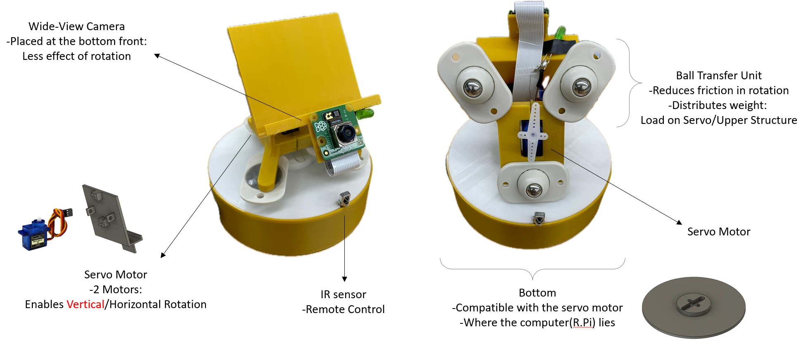
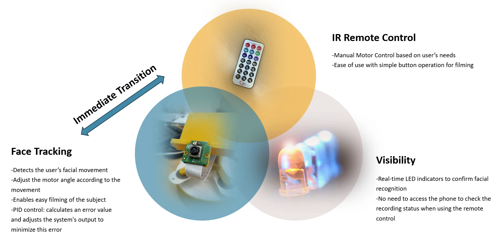

HD Hyundai Mechatronics Competition · 2024
Automated Filming Device
Grand PrizeA portable hands-free filming device that combines face tracking, motorized pan–tilt motion, and infrared remote control for solo creators.

- HD Hyundai Mechatronics
- Grand Prize
- Pan–tilt motion
- 2-axis
- Team prize
- ₩3M
Motivation
Solo creators need to keep a subject framed without continuously adjusting a phone or relying on a camera operator. Our team built a compact filming device that follows a face and can also be repositioned using a remote control.
Hardware
The design combines a Raspberry Pi, a wide-view camera, two servo motors for horizontal and vertical motion, an infrared receiver, and a ball-transfer support mechanism. The sunflower-inspired assembly is designed for portability and straightforward assembly.
Software and interaction
Visual face tracking drives pan–tilt adjustments. Infrared remote commands provide manual directional control and operating-mode input, while LED indicators communicate device status. The team implementation uses LIRC and NEC infrared commands.
Recognition
The project received the Grand Prize (first place) at the 2024 HD Hyundai Mechatronics Competition, with a team prize of KRW 3,000,000.
Inside the project


Shared project photographs and diagrams are reproduced from teammate Seunghun Oh’s project page. Project descriptions are adapted for this joint team project.